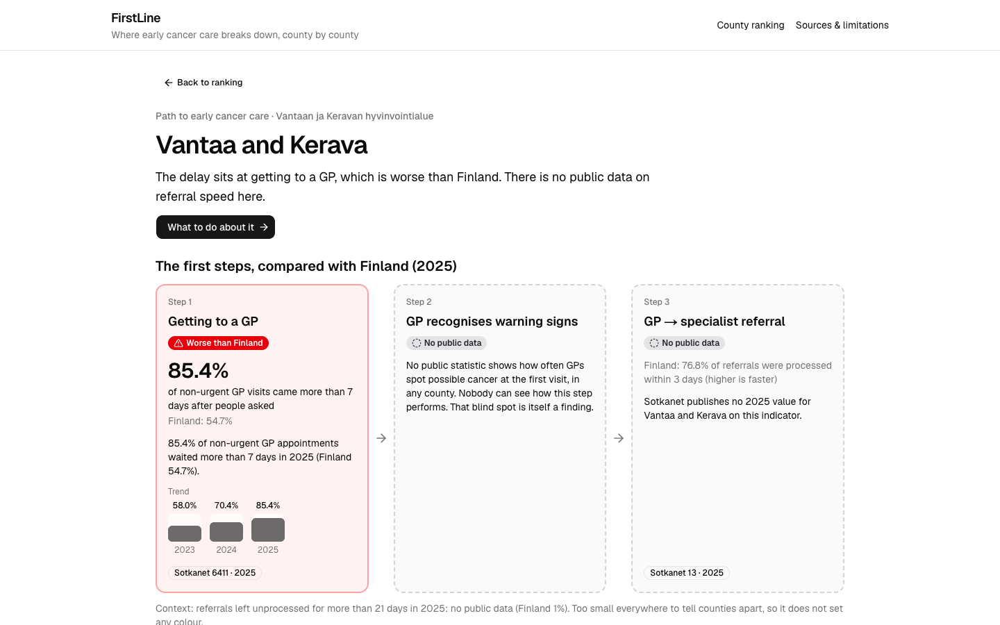
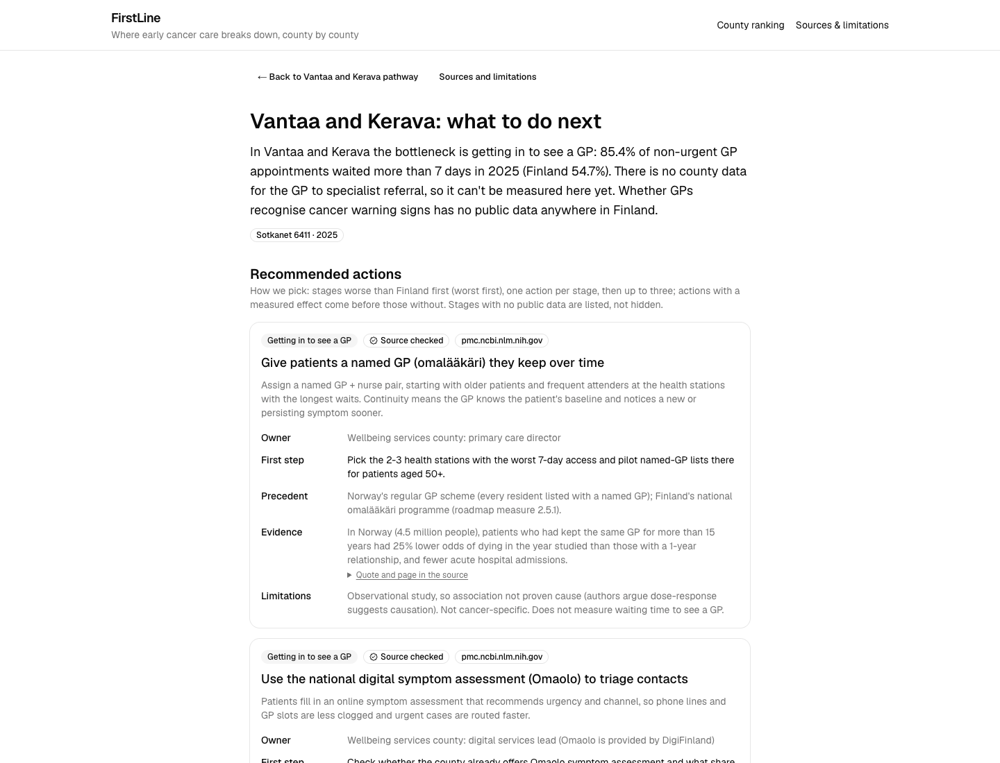
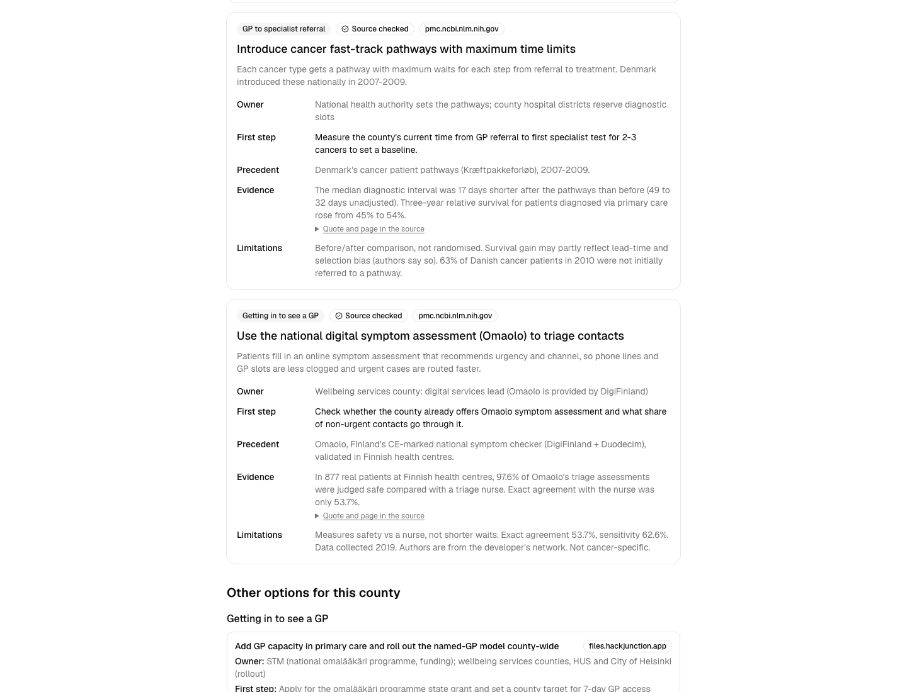
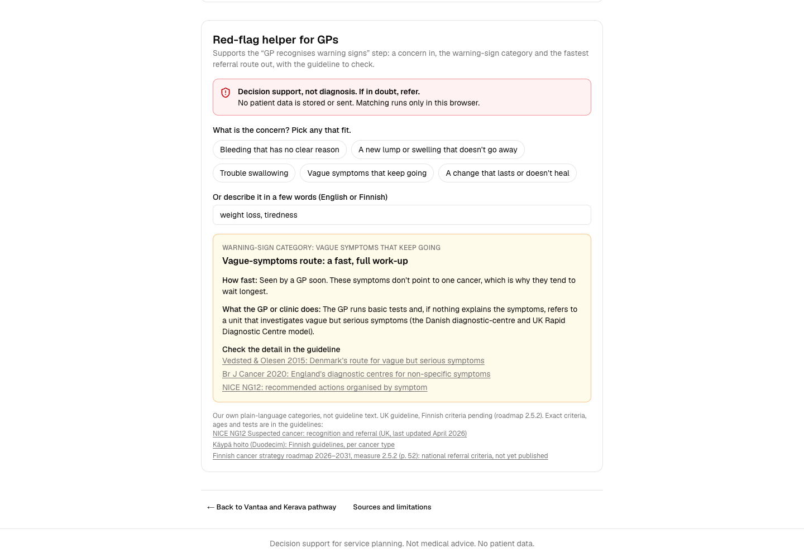

In Vantaa-Kerava, 85% of non-urgent GP visits come more than a week after people ask. In Päijät-Häme it's a third.
85.4%Vantaa-Kerava
32.7%Päijät-Häme
Finland 54.7%
THL Sotkanet 6411, 2025 (share of non-urgent GP visits kept more than 7 days after the need was assessed)
FirstLine1
Where the GP is the first stop, 75 to 85 percent of cancer patients start there. Yet no one shows a county where its own first step breaks
Patient
→1 · getting in to a GP
GP
→2 · GP to specialist
Specialist
Context: National cancer strategy 2026-2035, equal care everywhere.
Steps 1 and 2 are the two steps FirstLine measures. GP as first stop: Vedsted & Olesen, Br J Cancer 2015 (PMC4385978); Danish and UK data, not Finnish. Strategy: Finnish national cancer strategy 2026-2035, implementation roadmap 2026-2031 (STM)
FirstLine2
Counties break at different steps, so one national fix won't work
Non-urgent GP visits kept more than 7 days after the need was assessed, % of visits, 2025
Kainuu
Quick to see a GP (38.4%, Finland 54.7%), slower from GP to specialist: 75.2% of referrals processed within 3 days (Finland 76.8%).
Vantaa-Kerava
Slow to see a GP (85.4%). No public referral data.
THL Sotkanet 6411, 2025 (bars). Sotkanet 13, 2025 (referrals processed within 3 days): lowest South Ostrobothnia 68.9%, highest Kanta-Häme 88.7% among areas with data.
FirstLine3
For each county, FirstLine shows where the delay is, and says openly where public data is missing

screenshot: main 84d76f2, local build; retake from live URL
Worse than Finland
Finland's level or better, still a wait
No public data
Vantaa and Kerava county page. THL Sotkanet 6411, 2025; Sotkanet 13, 2025 (no value published for this county)
FirstLine4
Every county gets 2-3 fixes that already worked elsewhere, each with an owner and a first step for Monday
Vantaa-Kerava: the delay is getting in to a GP

screenshot: main 84d76f2, local build; retake from live URL
25%lower odds of dying in the year studied for patients who kept the same GP for 15+ years (Norway), and fewer hospital admissions.Sandvik et al., Br J Gen Pract 2022 · ev-gp-continuity
South Ostrobothnia: the delay is after the GP

screenshot: main 84d76f2, local build; retake from live URL
17 daysshorter median diagnostic interval (adjusted) after Denmark's fast-track cancer pathways.Jensen et al., BMC Cancer 2015 · ev-ref-denmark-cpp
Each card shows owner, first step, precedent and a source. 2 of these fixes are already in Finland's 2026-2031 cancer roadmap (measures 2.5.1, 2.5.2).
FirstLine5
For the GP: symptoms in, guideline warning signs and the fastest referral route out

screenshot: main 84d76f2, local build; retake from live URL
Decision support, not diagnosis
Type "weight loss, tiredness" (or pick a category). The helper shows the vague-symptoms route and links the guidelines. It does not copy their text.
Matching runs in the browser. No patient data is stored or sent.
Links to the guidelines (NICE NG12, UK; Käypä hoito); Finnish national criteria pending (roadmap 2.5.2)
FirstLine6
Checked data shows where care breaks; Exa shows what's happening about it this week, with a link for every claim
County news strip screenshot newest card with date and site; never edit a date
found live - unverifiedchecked evidenceTODOdated screenshot (owner: Phương, N4; redo Sun 07:00)
Judges can ask their own question; answers come only from linked results, or "nothing found".
FirstLine7
A county director can see their bottleneck and start the first step in two minutes, using public data only
Every number is sourced. No patient data.
22 areas, one bottleneck view each, 2-3 fixes each.
Next step: a pilot with one wellbeing services county.
TODOlive URL (owner: Phương, N5) and repo URL
FirstLine: equal first steps, across Finland.
FirstLine8
Backup
B1 to B6
FirstLine9
B1
What our main number does and doesn't measure
6411: share of non-urgent GP visits kept more than 7 days after the need was assessed.
All non-urgent visits, not only cancer. It counts visits, not people.
Why still use it: early cancer symptoms are vague, so these patients land in the normal queue. TODOmentor answer to P1, only with recorded consent (Luan, N6)
Indicator 13 shows when the hospital starts assessing a referral, not when the patient sees a specialist.
5033 is 0-3% everywhere, whole numbers: context only, not used for ranking.
No public indicator for "GP recognises the symptoms": grey for every county.
No referral data for Vantaa-Kerava or East, Central and West Uusimaa. Sotkanet region 599 is unnamed, so it is left out.
Helsinki has referral data for 2025 only.
Åland is excluded.
Treatment access is out of scope. TODOfigure for "data is flat" (indicator 5093) is not in data; Phương to confirm (N1)
Source: data/README.md
FirstLine11
B3
Method and sources
Sotkanet API to a static JSON snapshot; every row has a source_id.
Status: each county's 2025 value vs Finland's 2025 value.
The AI only writes text around fixed numbers; a validator drops any claim whose number or source is not in the data.
Sotkanet 6411, 13, 5033 retrieved 13 Nov 2026.
/sources page screenshot page is on main now; screenshot still to add
data/sources.json. TODO/sources screenshot (page merged in PR #10; see ../screenshots/09-sources.png) (Tuan, N3)
FirstLine12
B4 · 1 of 2
14 checked actions, matched to 3 bottlenecks
Bottleneck
Action
Result
Getting to a GP
Named GP (omalääkäri) they keep over time
Norway: 25% lower odds of dying in the year studied (observational)
Getting to a GP
Add GP capacity, named-GP model county-wide
Finland roadmap 2.5.1; effect not quantified
Getting to a GP
Nurses handle suitable first-contact visits
Cochrane, 18 trials: equal or better outcomes
Getting to a GP
Omaolo digital triage
Finland: 97.6% judged safe, 877 patients
GP recognition
Low referral threshold (about 3% cancer risk)
NICE NG12; effect not quantified
GP recognition
Safety-netting as standard
NICE NG12; effect not quantified
GP recognition
Direct CT access plus training
Denmark: no significant overall effect (36 vs 44 days)
data/evidence.json and docs/evidence/evidence.json (14 verified rows: 4 / 3 / 7); results shown honestly, including where waits did not fall. Owner and full source for each row are in the evidence table.
FirstLine13
B4 · 2 of 2
14 checked actions, matched to 3 bottlenecks
Bottleneck
Action
Result
GP to specialist
National referral criteria
Finland roadmap 2.5.2; effect not quantified
GP to specialist
Fast-track pathways with time limits
Denmark: median diagnostic interval 17 days shorter (adjusted)
GP to specialist
Funded pathways, regions report waits
Sweden: waits cut, regional gaps stayed
GP to specialist
Fast diagnostic route for vague symptoms
Denmark: 15-20% referred have cancer
GP to specialist
Rapid diagnostic centre pilot
England: 241 cancers in 2,961 referred (8%)
GP to specialist
Structured e-referral templates
Norway: referral quality score 18% higher
GP to specialist
E-consultation with a specialist
Ontario: answer in median 0.9 days
Sweden: ev-ref-sweden-svf. Denmark CT: ev-rec-direct-ct-training (previous page). Rows from docs/evidence/evidence.json.
FirstLine14
B5
Exa layer: what is live, what is checked
County news, the evidence finder under each action, and the judge question box.
The Exa key stays on the server. Results are cached.
If Exa is down: "Live search unavailable", and the checked table stays visible.
TODOjudge-box tests X/15 pass, median latency (Tuan, N10)
Live finds are labelled "found live - unverified" and kept apart from checked evidence.
FirstLine15
B6
Likely questions
Is 6411 about cancer? No, it is all non-urgent GP visits. It is the best public measure of the first step, and the app says so on every county page.
Did these actions really work? We show the honest result: Sweden's pathways cut waits but regional gaps stayed; Denmark's direct CT access alone did not help significantly.
Who would pay or act? The wellbeing services county. Every action names the owner, and two are already in the 2026-2031 cancer roadmap.
NICE and Käypä hoito are linked only, never copied. Source: docs/pitch/demo-script.md, docs/evidence/red-flags.md